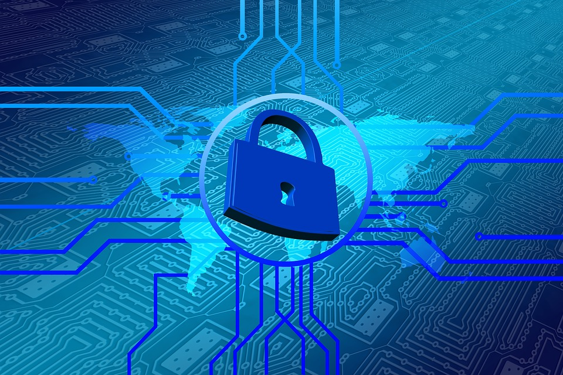

DESCRIPCIÓN DE LA SEGURIDAD EN REDES
Seguridad en la red. Definición y conceptos básicos
En la actualidad las Redes Internet es uno de los canales de comunicación más importantes, Se trata de una herramienta de información y de comunicación extenso que hay en el mundo.
Que alberga sin numero de páginas he innumerables peligros que hay que aprender a identificar para poder escoger las medidas de protección más adecuadas en cada caso concreto. Se trata de aplicar diferentes técnicas que protejan los equipos informáticos de daños, tales como los ataques perpetrados por hackers; pérdidas de información causadas por virus, gusanos y demás malware; ciberbullying y grooming sufrido por menores en redes sociales;
No obstante, las tres medidas básicas de seguridad que no pueden faltar en ningún ordenador conectado a Internet son: un cortafuegos, un antivirus y realizar las pertinentes actualizaciones de seguridad.
, Internet ha ido avanzando hasta llegar a convertirse en la actualidad en uno de los canales de comunicación más importantes y cada vez más extendido entre jóvenes y mayores. Se trata de una herramienta de información y de comunicación con una dimensión cultural muy versificada.
Pero Internet alberga entre sus páginas innumerables peligros que hay que aprender a identificar para poder escoger las medidas de protección más adecuadas en cada caso concreto. Se trata de aplicar diferentes técnicas que protejan los equipos informáticos de daños accidentales o intencionados, tales como los ataques perpetrados por hackers; pérdidas económicas causadas por virus, gusanos y demás malware; ciberbullying y grooming sufrido por menores en redes sociales; spam que inunda nuestro buzón con anuncios basura, timos y fraudes; software espía que se hace con nuestros datos financieros; pornografía y contenidos inadecuados para menores; pérdida de la intimidad personal y del anonimato… En definitiva, una larga lista que puede hacer perder el control de nuestros equipos.
No obstante, las tres medidas básicas de seguridad que no pueden faltar en ningún ordenador conectado a Internet son: un cortafuegos, un antivirus y realizar las pertinentes actualizaciones de seguridad.
CORTAFUEGOS
Es un sistema que se utiliza para evitar que usuarios desautorizados tengan acceso a las redes privadas conectadas con Internet. Un cortafuegos no elimina problemas de virus del ordenador, sino que cuando se utiliza conjuntamente con actualizaciones regulares del sistema operativo y un buen software antivirus, añadirá cierta seguridad y protección al ordenador o a la red.
ANTIVIRUS
Es un programa cuya función es prevenir o evitar la activación de los virus, así como su propagación y contagio. El antivirus cuenta con una rutina de detención, de eliminación y de reconstrucción de los archivos y de las áreas infectadas o dañadas.
ACTUALIZACIONES DE SEGURIDAD
Para que un sistema operativo esté exento de ataques por parte de virus, gusanos, troyanos e intrusos, hay que actualizarlo periódicamente. Las Actualizaciones Automáticas se activan por defecto, mientras el equipo esté conectado a Internet, de acuerdo a la programación que previamente se haya definido
Conceptos básicos de seguridad: Definición de la seguridad, para que puedas tener la confianza en la red.
Seguridad de la informacion.
Imagen recuperada en línea de:
file:///C:/Users/electrom/Documents/GitHub/REPOSITORIO-OVI-GRUPO-82/Imagenes/seguridadenredes.jpg

https://www.cyldigital.es/articulo/seguridad-en-la-red-definicion-y-conceptos-basicos